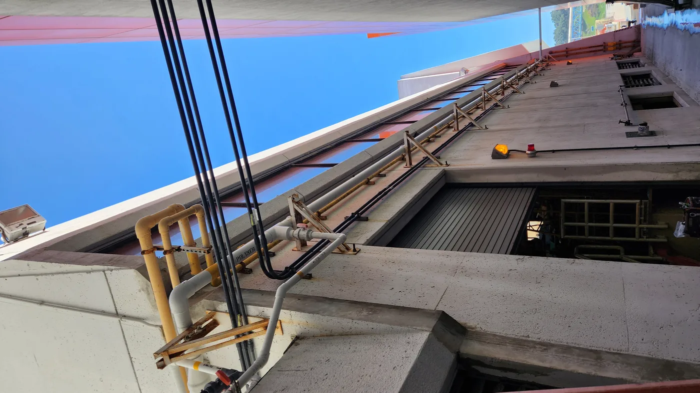
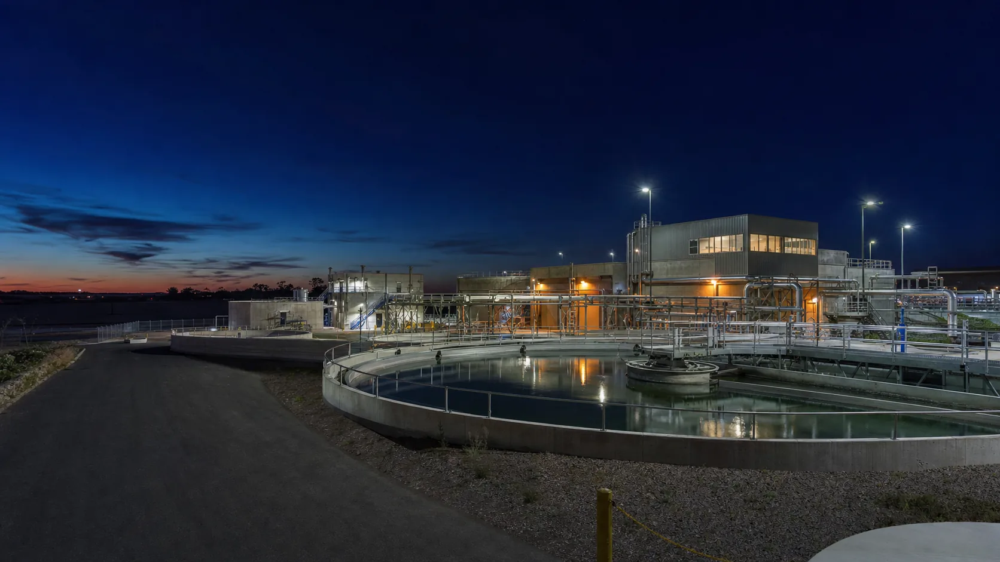
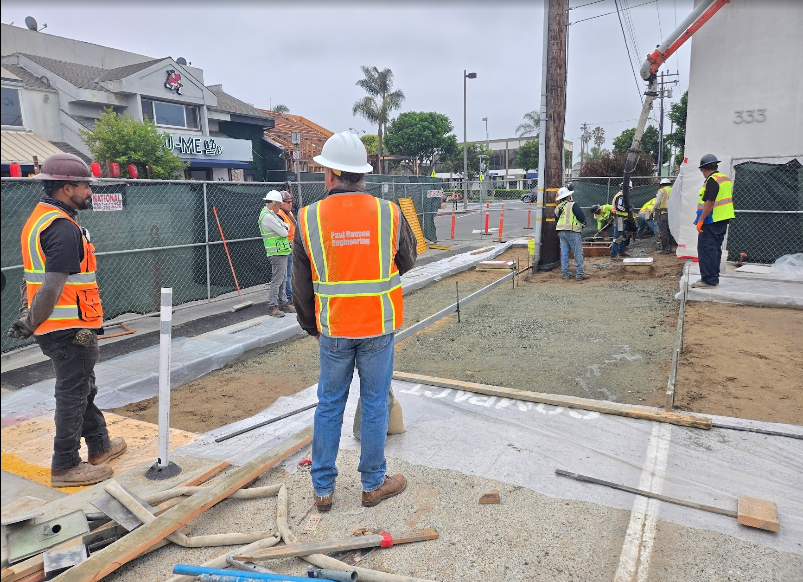

Water & Wastewater
Active process environments, mechanical piping, pumps, odor-control and chemical systems, shutdown awareness, testing, and closeout coordination.
Experience / 03
HardBid Consulting is founder-led by Freddy Leon, whose individual experience spans hands-on craft work, detailed construction, industrial and mechanical systems, active facilities, coordination, and superintendent-level leadership.
Founder experience is presented separately from work performed directly by HardBid Consulting.
Experience that informs the work
HardBid Consulting’s review perspective is grounded in sequence, access, constructability, communication, and the practical consequences of missing information.
Active process environments, mechanical piping, pumps, odor-control and chemical systems, shutdown awareness, testing, and closeout coordination.
Fabrication, installation planning, takeoffs, field markups, material preparation, interfaces, access, and work under schedule pressure.
Supervision, team coordination, RFIs, delegation, quality expectations, custom finishes, problem-solving, and responsibility for execution.
Selected founder project experience
These profiles describe Freddy Leon's individual project experience before founding HardBid Consulting. They are not presented as contracts performed by HardBid Consulting.

Project photographLos Angeles, California
Founder experience supporting industrial process work involving mechanical coordination, field planning, and execution in an active treatment environment.

Representative imageSan Pedro, California
Founder experience with polymer-system improvement work requiring planning, mechanical coordination, communication, and active-facility awareness.

Project photographManhattan Beach, California
Founder project experience associated with public works construction, where site access, sequencing, coordination, and field execution shaped the work.
The Hyperion and Manhattan Beach images are verified project photographs. The San Pedro image remains representative until its exact source folder is confirmed.
What field experience changes
A count can be correct and the scope can still be incomplete. The field lens asks what supports, connects, protects, tests, restores, moves, and closes the work.
Access, temporary conditions, shutdowns, tie-ins, removals, installation sequence, and restoration can change the real requirement.
Mechanical, structural, electrical, controls, civil, architectural, and demolition boundaries can create overlooked cost or responsibility.
Material, elevation, detail, schedule, testing, or responsibility gaps should be identified before they become field questions.
The bid team needs to know which uncertainties require clarification, pricing coverage, allowance, exclusion, or contractor direction.
During a plan review, Freddy recognized that a group of pumps appeared oriented backward. The conflict explained why the surrounding piping would not coordinate as expected. After the issue was confirmed, the engineering and drawing teams could correct the information before the field work continued.
The value was not simply noticing an unusual symbol. It was understanding what that orientation would do to the system in the field.
This is the perspective HardBid Consulting brings to document review: connect what is shown on paper to what must actually be planned, priced, installed, tested, and accepted.
Accurate representation
HardBid Consulting does not represent itself as a licensed engineering or architectural firm. Credentials and project experience belong to the founder or identified individuals unless specifically stated otherwise.
Professional design, code determinations, and final technical approvals remain with the appropriate licensed parties and the contractor.
Field-informed review